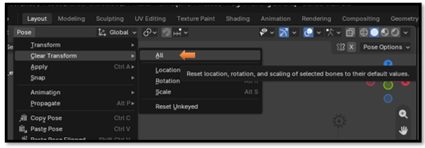
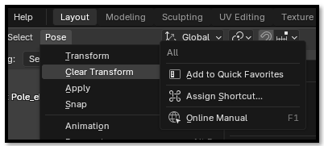
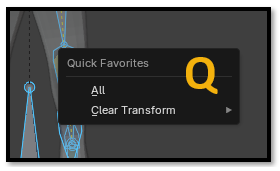
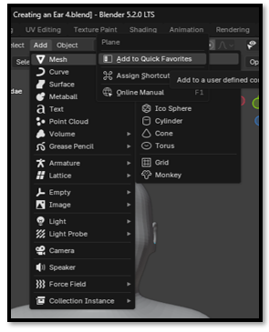
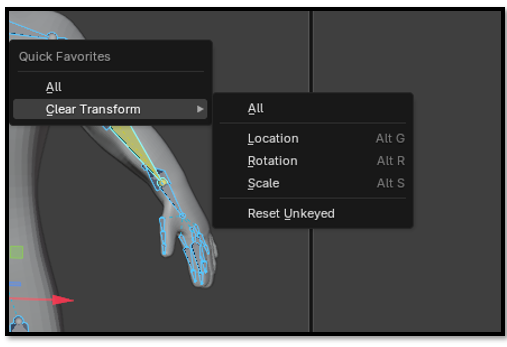

~12 Assigning Quick Favorites~
11/23/2026
Honestly, it is much easier to do this than to assign your own shortcut key. Blender already uses an extensive list of shortcuts, and just about anything you can think of is probably already taken.
Select the tool you want to add to your Quick Favorites.

Right-click on it, and select Add to Quick Favorites.

To access the Quick Favorites menu, press Q on your keyboard. If you selected All from the Clear Transform list first, it will appear in your Quick Favorites. This is like selecting all of the bones and clearing the entire pose in one step. Pretty handy!

Find the command you want in one of Blender's menus. Right-click → Add to Quick Favorites.

Now, whenever you need that command, just press Q to open your Quick Favorites.

WATCH IT: Quick Favorites are mode-specific. If you add a command while in Pose Mode, you may not see it when you switch to Object Mode. If your favorite seems to have disappeared, first make sure you're in the same mode where you added it.